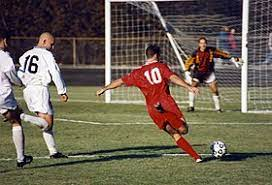

O futebol, também referido como futebol de campo, futebol de onze e, originalmente, futebol associado (em inglês: association football, football, soccer), é um esporte de equipe jogado entre dois times de 11 jogadores cada um e um árbitro que se ocupa da correta aplicação das normas. É considerado o desporto mais popular do mundo, pois cerca de 270 milhões de pessoas participam das suas várias competições. É jogado num campo retangular gramado, com uma baliza em cada lado do campo. O objetivo do jogo é deslocar uma bola através do campo para colocá-la dentro da baliza adversária, ação que se denomina golo (português europeu) ou gol (português brasileiro). A equipe que marca mais gols ao término da partida é a vencedora.
O jogo moderno foi criado na Inglaterra com a formação de The Football Association, cujas regras de 1863 são a base do desporto na atualidade. O órgão regente do futebol é a Federação Internacional de Futebol (em francês: Fédération Internationale de Football Association), mais conhecida pelo acrônimo FIFA. A principal competição internacional de futebol é a Copa do Mundo FIFA, realizada a cada quatro anos. Este evento é o mais famoso e com maior quantidade de espectadores do mundo, o dobro da audiência dos Jogos Olímpicos.
